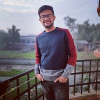

|  | Prince AgarwalStudent At ACET Campus SuperHero Of Coding Blocks |
To obtain professional excellence through sincerity and to explore myself and to utilize my knowledge and skills
| Degree | School/College | Board/University | Marks Obtained/CGPA |
| B-Tech CSE | Amritsar College Of Engineering And Technology | PTU | 8.6 CGPA(avg) |
| HSC | Dhruv Senior Secondary Scool | RBSE | 89.40% |
| SSC | Little Angels Public Secondary School | RBSE | 84.33% |